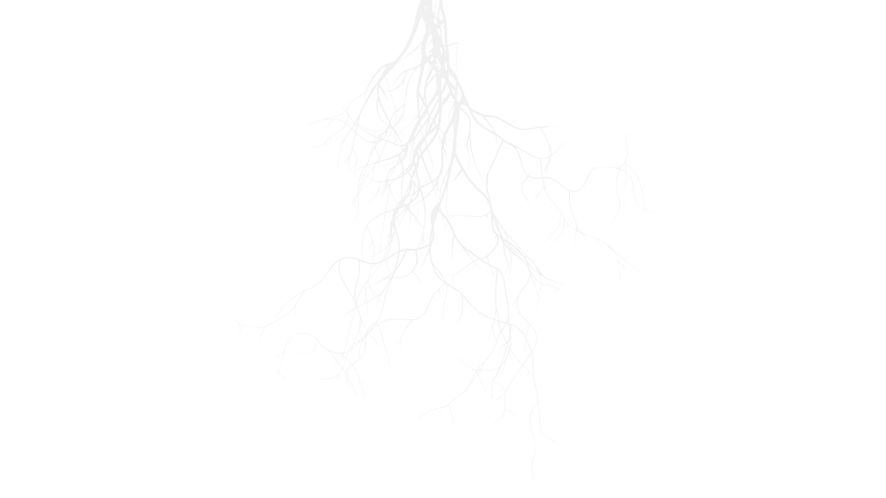
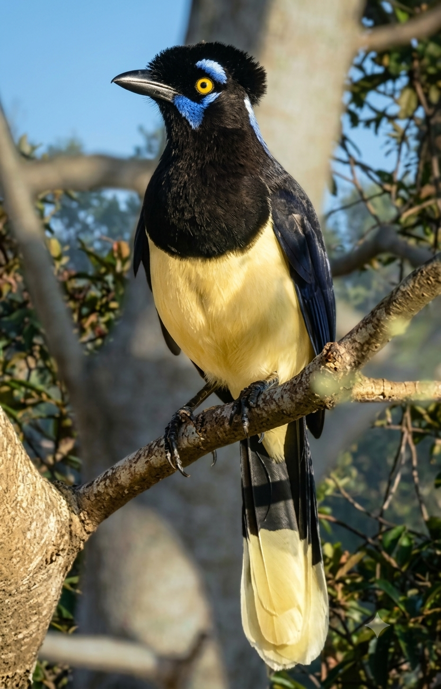

Da terra às mãos,
das mãos para o mundo.
Um projeto social e cultural que caminha ao lado do artesão de Bonito — da produção à feira — e que abre a região ao ecoturismo através do avistamento de aves do cerrado.
O ofício tem raiz — e a raiz precisa de cuidado.
O Marambaia Eco Criativa é um projeto social e cultural que forma artesãos locais em Bonito, Mato Grosso do Sul, e integra a comunidade ao ecoturismo da região.
Caminhamos com quem faz. Da matéria-prima colhida no cerrado ao produto final na feira — quatro etapas que sustentam o ofício como fonte de renda estável e reconhecida.
Produção
Técnica, material e identidade de cada peça, respeitando o saber que já existe na mão do artesão.
Precificação
Valor justo para o tempo, a técnica e a matéria-prima. Preço que dignifica quem produz.
Venda
Canais certos para cada tipo de produto — do balcão da cooperativa ao comprador distante.
Feiras
Presença em eventos regionais e nacionais para dar visibilidade real ao trabalho manual.
O que sai das bancadas.
Quatro linguagens do ofício em Bonito. Cerâmica, fibras, madeira e bijuterias — cada uma com sua raiz.


A serra tem voz — e ela tem asas.

A serra da Bodoquena é um dos poucos lugares do país onde o Cerrado, a Mata Atlântica e o Pantanal se encontram — e as aves são o primeiro sinal disso.
Formamos guias-artesãos: pessoas que conhecem a região, sabem chamar as espécies e, entre uma trilha e outra, também tecem, entalham e moldam.



Dez biografias, contadas por quem viveu.
Cada peça carrega uma vida. Aqui, o artesão sai de trás da bancada e conta — em vídeo curto — o caminho que o trouxe até aqui. Uma parceria com o Museu da Pessoa.
Cada real recebido, cada real investido — aberto para consulta.
total investido no projeto — ciclo 2024/2025
Da sua mão, para o mundo.
Se você é artesão em Bonito, quer aprender um ofício, ou quer apoiar o projeto — o próximo ciclo abre em breve.
Quero Participar →